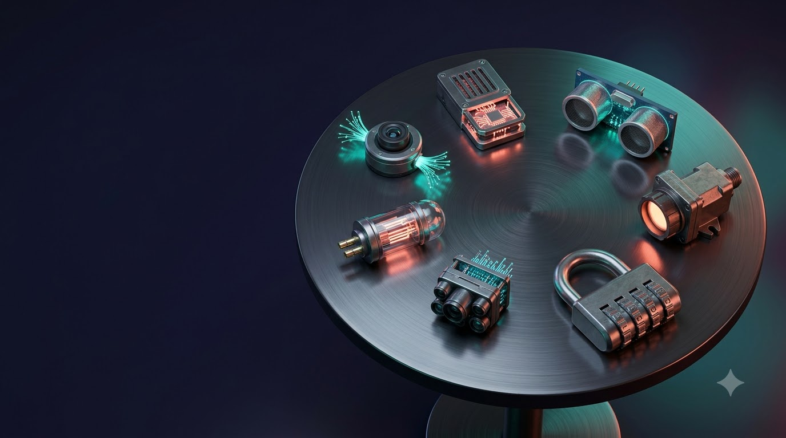

확률과 통계: 불확실성을 다루는 공학의 언어
영상: Google Flow로 생성

01
1주차
원순열과 중복순열
경우의 수 (1) · 교과서 p.10~15
확률과 통계 · 공과대학 1학년
이미지: Google Flow로 생성
10주 강의 흐름
1주차- 1~3주: 경우의 수, 확률 계산의 출발점
- 4~5주: 확률, 불확실성을 수로 표현
- 6~8주: 확률분포, 불확실성의 모양
- 9~10주: 통계적 추정, 표본으로 전체 추측
| 구간 | 주차 | 핵심 질문 |
|---|---|---|
| 경우의 수 | 1~3 | 몇 가지? |
| 확률 | 4~5 | 얼마나 자주? |
| 확률분포 | 6~8 | 어떤 모양? |
| 통계 | 9~10 | 전체는 어떨까? |
왜 경우의 수부터인가
1주차- 확률 = (원하는 경우의 수) / (전체 경우의 수)
- 경우의 수 계산이 곧 확률 계산의 출발점
- 공학 사례: 비밀번호 보안 강도, 테스트 조합 수
- 공학 사례: 회로 배선 경우, 부품 배치 방법
P(A) = n(A) / n(S)
분자·분모 모두 경우의 수
학습목표
1주차1
원순열의 뜻 이해와 원순열의 수 계산
2
중복순열의 뜻 이해와 중복순열의 수 계산
3
두 개념의 공학 문제 적용
1주차 · 원순열과 중복순열
복습: 합·곱의 법칙, 순열, 조합
고등학교 수학에서 배운 내용
합의 법칙과 곱의 법칙
1주차- 합의 법칙: 동시에 일어나지 않는 두 사건 → 경우의 수의 합
- 곱의 법칙: 잇달아 일어나는 두 사건 → 경우의 수의 곱
- 예: 상의 2벌, 하의 3벌 → 옷 입는 방법 2 × 3 = 6가지
순열과 계승(!)
1주차순열 nPr
서로 다른 n개에서 r개를 택해 일렬로 배열하는 경우의 수
nPr = n!/(n−r)!
0! = 1, n! = n × (n−1) × … × 2 × 1
n
첫째
×
n−1
둘째
×
n−2
셋째
×
…
×
n−r+1
r째
순열과 조합의 차이
1주차순열 nPr: 순서 고려
- ABC, ACB, BAC, BCA, CAB, CBA
- 모두 서로 다른 6가지
- 3P3 = 3! = 6
조합 nCr: 순서 무시
- {A, B, C} 하나로 취급
- 순열 3!가지가 조합 1가지
- nCr = n!/(r!(n−r)!)
1주차 · 원순열과 중복순열
원순열
회전하면 같은 배열

비유
생각 열기: 원탁의 기사
- 상석도 말석도 없는 원탁
- 모두가 한 칸씩 옮겨 앉아도 같은 배치
- 의미 있는 것은 "누구 옆에 누가"라는 관계
![생각 열기: 바람개비 [교과서 p.11]](../img/web/w01_%EB%B0%94%EB%9E%8C%EA%B0%9C%EB%B9%84.jpg)
비유
생각 열기: 바람개비 [교과서 p.11]
- 날개 색 순서가 같으면 같은 바람개비
- 90°씩 돌려도 같은 바람개비
- 일렬 배열과 원형 배열의 결정적 차이: 회전
일렬 배열 vs 원형 배열
1주차일렬 배열
- ABCD, BCDA, CDAB, DABC
- 맨 앞이 누구인지가 다름
- → 서로 다른 4가지
원형 배열
- 네 배열 모두 회전하면 일치
- 시작점이라는 개념의 부재
- → 같은 1가지
원순열의 뜻
1주차원순열
서로 다른 것을 원 모양으로 배열하는 순열. 회전하여 일치하는 경우는 모두 같은 것으로 취급
원순열의 수 유도
1주차- 일렬 배열 n!가지를 원 모양으로 배치
- 회전하여 같아지는 배열이 n가지씩 존재
- 따라서 원순열의 수 = n!/n = (n−1)!
- 예: 4명 → 4!/4 = 24/4 = 6가지
n!/n = (n−1)!
같은 것이 n개씩 묶여 있으므로 n으로 나눔
다른 관점: 한 자리 고정
1주차- 한 사람의 자리를 먼저 고정 → 회전의 기준점 생성
- 나머지 (n−1)명을 일렬로 배열하는 문제로 변환
- 결과는 같은 (n−1)!
A
고정
×
3
둘째 자리
×
2
셋째 자리
×
1
넷째 자리
원탁에 둘러앉기
1주차교과서 예제
A, B, C, D, E 5명이 원 모양의 탁자에 둘러앉는 방법의 수
- 서로 다른 5개의 원순열
- (5−1)! = 4!
- 4! = 4 × 3 × 2 × 1
답 24가지
부모가 이웃하여 앉기
1주차교과서 예제
아버지·어머니를 포함한 6명의 가족이 원탁에 앉을 때, 부모가 이웃하여 앉는 방법의 수
- 부모를 한 묶음으로 보면 5명(묶음)의 원순열: (5−1)! = 24
- 묶음 안에서 부모가 자리를 바꾸는 방법: 2! = 2
- 곱의 법칙: 24 × 2
답 48가지
원형 센서 배치
1주차공학 예제
서로 다른 센서 6개를 회전 대칭인 원형 측정 장치 둘레에 같은 간격으로 배치하는 방법의 수
- 장치가 회전 대칭 → 회전하여 같은 배치는 같은 배치
- 서로 다른 6개의 원순열
- (6−1)! = 5! = 120
답 120가지
1주차 · 원순열과 중복순열
중복순열
같은 것을 여러 번 택할 수 있을 때

비유
생각 열기: 번호 자물쇠
- 각 칸마다 0~9 중 아무 숫자나 선택 가능
- 같은 숫자를 여러 번 써도 됨: 0000, 7777도 가능
- 4칸 → 10 × 10 × 10 × 10 = 10,000가지
중복순열의 뜻과 수
1주차중복순열 nΠr
서로 다른 n개에서 중복을 허용하여 r개를 택하는 순열
nΠr = nr
중복 허용 → r > n 도 가능
n
첫째
×
n
둘째
×
n
셋째
×
…
×
n
r째
편지와 우체통
1주차교과서 예제
서로 다른 편지 5통을 두 우체통 A, B에 넣는 방법의 수
- 편지 한 통마다 우체통 A 또는 B 선택: 2가지
- 편지 5통이 각자 선택 → 2에서 5개를 택하는 중복순열
- 2Π5 = 25
답 32가지
2
편지1
×
2
편지2
×
2
편지3
×
2
편지4
×
2
편지5
주의: 무엇이 무엇을 고르는가
1주차- "선택하는 쪽"의 개수가 지수 r
- "선택지"의 개수가 밑 n
- 편지(5통)가 우체통(2개)을 고름 → 25, 52 아님
- 헷갈리면 "칸 = 선택하는 쪽"으로 칸 그림 그리기
(선택지 수)(선택하는 쪽 수)
25 = 32 ≠ 52 = 25
이진 코드: 비트가 늘면 경우의 수는 2배씩
1주차n비트 이진 코드의 개수 = 2Πn = 2n
서버 작업 할당
1주차공학 예제
서로 다른 작업 5개를 서버 3대에 할당하는 방법의 수 (작업이 없는 서버 허용)
- 작업 하나마다 서버 3대 중 하나 선택
- 선택하는 쪽 = 작업(5개), 선택지 = 서버(3대)
- 3Π5 = 35
답 243가지
3
작업1
×
3
작업2
×
3
작업3
×
3
작업4
×
3
작업5
비밀번호 길이와 보안 강도
1주차1만
숫자 4자리: 104
100만
숫자 6자리 OTP: 106
약 2.8조
소문자+숫자 8자리: 368
모두 중복순열: (문자 종류 수)(자릿수)
확인 퀴즈
1주차Q1
서로 다른 7개의 구슬을 원형으로 배열하는 방법의 수
→ (7−1)! = 6! = 720
Q2
0과 1만 사용한 10자리 이진 코드의 개수
→ 2Π10 = 210 = 1024
Q3
서로 다른 공 4개를 서로 다른 상자 3개에 넣는 방법의 수 (빈 상자 허용)
→ 3Π4 = 34 = 81
1주차 정리
원순열
회전하여 같은 배열은 하나로 취급, (n−1)!
중복순열
중복을 허용하는 순열, nΠr = nr
핵심 요령
기준점 고정, 선택하는 쪽을 칸으로 그리기
다음 주: 같은 것이 있는 순열과 중복조합
이미지 출처
1주차| 자료 | 작가 | 라이선스 |
|---|---|---|
| 주차 표지 이미지, 인트로 영상 | Google Flow로 생성 | AI 생성 |
| King Arthur and the Knights of the Round Table | Évrard d'Espinques | Public domain |
| Toy Pinwheel in Fuzhou Zuohai Park | Davidzdh | CC BY-SA 3.0 |
| Close-up of a padlock with number combination (50724043466) | Ivan Radic | CC BY 2.0 |
사진: Wikimedia Commons의 자유 라이선스 이미지 · 그래프: 직접 계산해 그림